After completing this lesson, students will be able to
understand the concept of magnetic field.
know the properties of magnetic field lines.
calculate the force exerted on a current carrying conductor in a magnetic field.
understand the force between two parallel current carrying conductors.
know the concept of electromagnetic induction and apply it in the case of generators.
appreciate how voltage can be increased or decreased using transformers.
understand the applications of electromagnet and apply the knowledge in constructing devices using electromagnets.
Have you ever played with magnets question mark Do you wonder why it attracts iron question mark Magnets are always attractive objects for the humans. Infact famous scientist Einstein has mentioned that he was always attracted by magnets in his childhood. In the olden days magnets were used in the ships. Captains of the ships effectively used the magnets to identify the direction of the ship in the sea.
There are two kinds of magnets that we can see around us: Natural magnet and Artificial magnet. Natural magnets exist in the nature. These kind of magnets can be found in rocks and sandy deposits in various parts of the world. The strongest natural magnet is lodestone magnetite.
The magnetic property in the natural magnets is permanent. It never gets destroyed. The lodestones were used to make compasses in the olden days. Artificial magnets are made by us. The magnets available in the shops are basically artificial magnets. In this lesson we shall study about properties of magnets, magnetic effect of current, electromagnetic induction and applications of electromagnets.
Box item open
Activity 1
Put a magnet on a table and place some paper clips nearby. If you push the magnet slowly towards the paper clips, there will be a point at which the paper clips jump across and stick to the magnet. What do you understand from this question mark box item ends
From the above activity we notice that magnets have an invisible field all around them which attracts magnetic materials. In this space we can feel the force of attraction or repulsion due to the magnet. Thus, magnetic field is the region around the magnet where its magnetic influence can be felt. It is denoted by B and its unit is Tesla.
The direction of the magnetic field around a magnet can be found by placing a small compass in the magnetic field Bracket OPEN Figure 5.1 bracket closed Compass showing direction of magnetic field image was given below
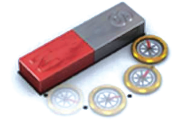
Magnetic field can penetrate through all kinds of materials, not just air. The Earth produces its own magnetic field, which shields the earth's ozone layer from the solar wind and it is important for navigation also.
A magnetic field line is defined as a curve drawn in the magnetic field in such a way that the tangent to the curve at any point gives the direction of the magnetic field. They start at north pole and ends at south pole. In Figure 5.2 the arrow mark indicates the direction of magnetic field at points A, B and C. Note carefully that the magnetic field at a point is tangential to the magnetic field lines.
Figure 5.2 Magnetic field lines image was given below
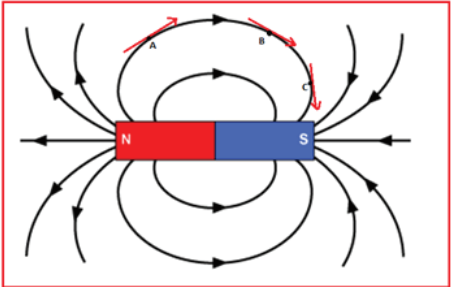
Figure 5.3 Magnetic flux image was given below
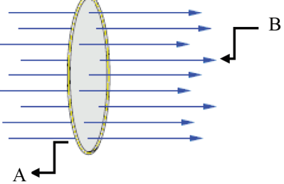
The number of magnetic field lines crossing unit area kept normal to the direction of field lines is called magnetic flux density. It is shown in Figure 5.4. Its unit is Wb by m power 2
Figure 5.4 Magnetic flux density image was given below
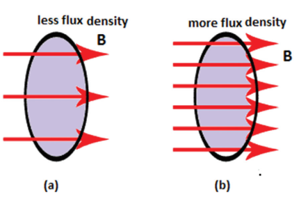
Box item open
Sea turtle image was given below
Some sea turtles Bracket OPEN loggerhead sea turtle bracket closed return to their birth beach many decades after they were born, to nest and lay eggs. In a research, it is suggested that the turtles can perceive variations in magnetic parameters of Earth such as magnetic field intensity and remember them. This memory is what helps them in returning to their homeland. box item ends
Magnetic lines of force are closed, continuous curves, extending through the body of the magnet.
Magnetic lines of force start from the North Pole and end at the South Pole.
Magnetic lines of force never intersect.
They magnetic field strength will be maximum at the poles than at the equator.
The tangent drawn at any point on the curved line gives the direction of magnetic field.
It was on 21st April 1820, Hans Christian Oersted, a Danish Physicist was giving a lecture. He was demonstrating electrical circuits in that class. He had to often switch on and off the circuit during the lecture. Accidentally, he noticed the needle of the magnetic compass that was on the table. It deflected whenever he switched on and the current was flowing through the wire. The compass needle moved only slightly, so that the audience didn’t even notice. But, it was clear to Oersted that something significant was happening. He conducted many experiments to find out a startling effect, the magnetic effect of current.
Oersted aligned a wire XY such that they were exactly along the North-South direction. He kept one magnetic compass above the wire at A and another under the wire at B. When the circuit was open and no current was flowing through it, the needle of both the compass was pointing to north. Once the circuit was closed and electric current was flowing, the needle at A pointed to east and the needle at B to the west as shown in Figure 5.5. This showed that current carrying conductor produces magnetic field around it.
The direction of the magnetic lines around a current carrying conductor can be easily understood using the right hand thumb rule. Hold the wire with four fingers of your right hand with thumbs-up position. If the direction of the current is towards the thumb then the magnetic lines curl in the same direction as your other four fingers as shown in Figure 5.6. This shows that the magnetic field is always perpendicular to the direction of current.
The strength of the magnetic field at a point due to current carrying wire depends on:
Bracket OPEN 1 bracket closed the current in the wire,
Bracket OPEN 2 bracket closed distance of the point from the wire,
Bracket OPEN 3 bracket closed the orientation of the point from the wire and
Bracket OPEN 4 bracket closed the magnetic nature of the medium. The magnetic field lines are stronger near the current carrying wire and it diminishes as you go away from it. This is represented by drawing magnetic field lines closer together near the wire and farther away from the wire.
Figure 5.5 Current produces magnetic field image a and b was given below
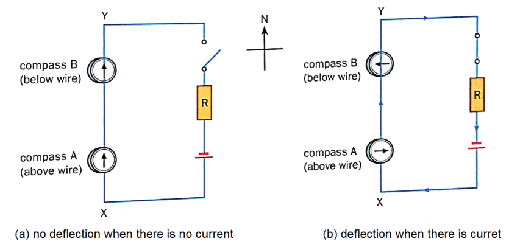
Figure 5.6 Right hand thumb rule image was given below
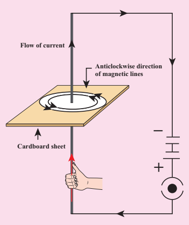
H.A. Lorentz found that a charge moving in a magnetic field, in a direction other than the direction of magnetic field, experiences a force. It is called the magnetic Lorentz force. Since charge in motion constitutes a current, a conductor carrying moving charges, placed in magnetic field other than the direction of magnetic field, will also experience a force and can produce motion in the conductor.
Box item open
Take a cardboard and thread a wire perpendicular through it. Connect the wire such that current flows up the wire. Switch on the circuit. Let the current flow. Place a magnetic compass on the cardboard and mark the position. Now move magnet and mark the new position. If you join all the points you will find that it is a circle. Reverse the direction of the current, you will find the magnetic circles are clockwise. Box item ends
From this activity, we infer that current carrying wire has a magnetic field perpendicular to the wire Bracket OPEN by looking at the deflection of the compass needle in the vicinity of a current carrying conductor bracket closed. The deflection of the needle implies that the current carrying conductor exerts a force on the compass needle. In 1821, Michael Faraday discovered that a current carrying conductor also gets deflected when it is placed in a magnetic field. In Figure 5.7, we can see that the magnetic field of the permanent magnet and the magnetic field produced by the current carrying conductor interact and produce a force on the conductor. The view perpendicular to the direction of current is shown in Figure 5.8.
Figure 5.7 Deflection of current carrying wire in magnetic field image was given below
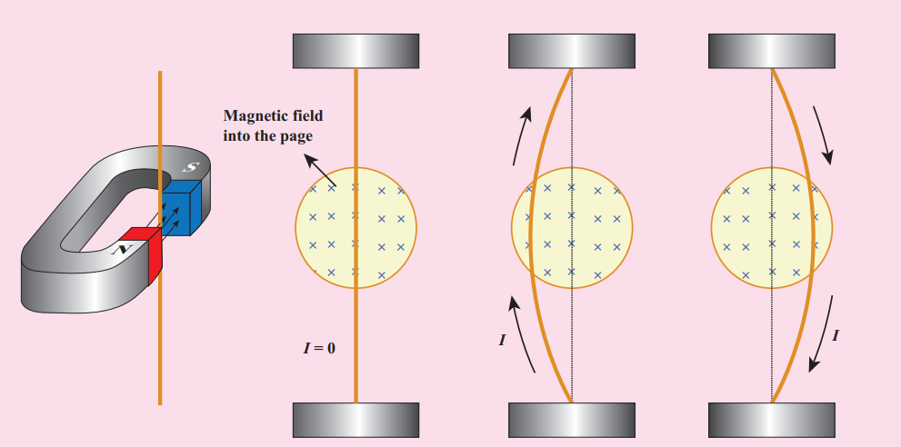
Figure 5.8 Force on a current carrying conductor kept in magnetic field image was given below
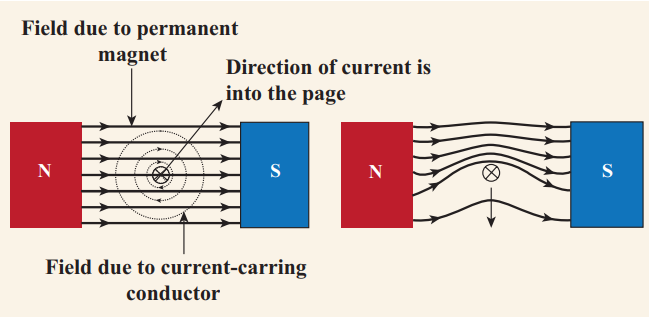
If a current, I is flowing through a conductor of length, L kept perpendicular to the magnetic field B, then the force F experienced by it is given by the equation,
F = I L B
The above equation indicates that the force is proportional to current through the conductor, length of the conductor and the magnetic field in which the current carrying conductor is kept.
Note: The angle of inclination between the current and magnetic field also affects the magnetic force. When the conductor is perpendicular to the magnetic field, the force will be maximum Bracket OPEN=BIL bracket closed. When it is parallel to the magnetic field, the force will be zero.
The force is always a vector quantity. A vector quantity has both magnitude and direction. It means we should know the direction in which the force would act. The direction is often found using what is known as Fleming’s Left hand Rule Bracket OPEN formulated by the scientist John Ambrose Fleming bracket closed.
Figure 5.9 Fleming’s left hand rule image was given below
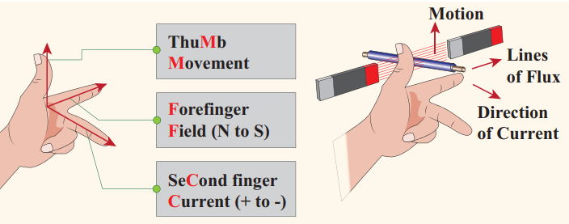
The law states that while stretching the three fingers of left hand in perpendicular manner with each other, if the direction of the current is denoted by the middle finger of the left hand and the second finger is for direction of the magnetic field, then the thumb of the left hand denotes the direction of the force or movement of the conductor Bracket OPEN Figure 5.9bracket closed
Box item open
A conductor of length 50 cm carrying a current of 5 A is placed perpendicular to a magnetic field of induction 2 into 10 power minus 3 T.
Find the force on the conductor.
Solution: Force on the conductor = ILB
= 5 into 50 into 10 power minus 2 into 2 into 10 power minus 3 = 5 into 10 power minus 3 N
Box item ends
Box item open
A current carrying conductor of certain length, kept perpendicular to the magnetic field experiences a force F. What will be the force if the current is increased four times, length is halved and magnetic field is tripled question mark
Solution: F = I L B = Bracket OPEN 4I bracket closed into Bracket OPEN L by 2 bracket closed into Bracket OPEN 3 B bracket closed = 6 F
Therefore, the force increases six times Box item ends
We have seen that a current carrying conductor has a magnetic field around it. If we place another conductor carrying current parallel to the first one, the second conductor will experience a force due to the magnetic field of the first conductor. Similarly, the first conductor will experience a force due to the magnetic field of the second conductor. These two forces will be equal in magnitude and opposite in direction.
Figure 5.10 Attractive and repulsive force on current carrying wires image was given below
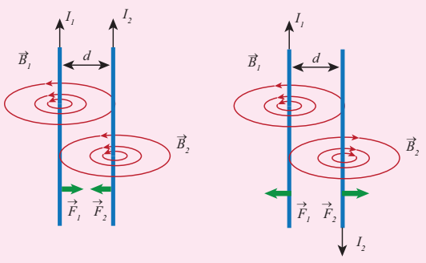
Using Fleming’s left hand rule we can find that the direction of the force on each wire would be towards each other when the current in both of them are flowing in the same direction That is the wires would experience an attractive force. However if the direction of the flow of current is in opposite direction, then the force on each of the wire will be in opposite direction. These are shown in Figure 5.10 and the perpendicular view of the same is shown in Figure 5.11.
Before 18th century people thought that magnetism and electricity were separate subjects of study. After Oersted's experiment the electricity and magnetism were united and became a single subject called ‘Electromagnetism’.
When there is current, the magnetic field is produced and the current carrying conductor behaves like a magnet. You may now wonder how was it possible for a lodestone to behave like a magnet when there was no current passing through it. Only in the twentieth century, we understood that the magnetic property arises due to the motion of electrons in the lodestone. In the circuit the electrons flow from negative of the battery to positive of the battery and constitutes current. As a result it produces magnetic field. In natural magnets and artificial magnets that we buy in shops, the electrons move around the nucleus constitutes current which leads to magnetic property. Here, every orbiting electron in its orbit is like a current carrying loop. Even though in all the materials electrons orbit around the nucleus, only for certain special type of material called magnetic material the motion of electrons around the nucleus gets added up and as a result we have permanent magnetic field
Figure 5.11 Force on current carrying conductors when viewed perpendicular to the direction of current image was given below
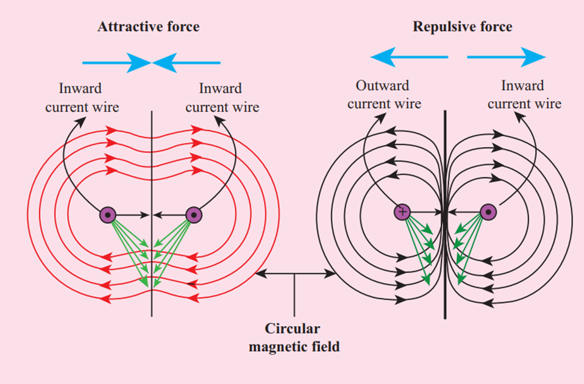
An electric motor is a device which converts electrical energy into mechanical energy. Electric motors are crucial in modern life. They are used in water pump, fan, washing machine, juicer, mixer, grinder etc. We have already seen that when electric current is passed through a conductor placed normally in a magnetic field, a force is acting on the conductor and this force makes the conductor to move. This is harnessed to construct an electric motor.
To understand how a motor works, we need to understand how a current carrying coil experiences a turning effect when placed inside a permanent magnetic field.
Figure 5.12 Turning effect in a coil image was given below
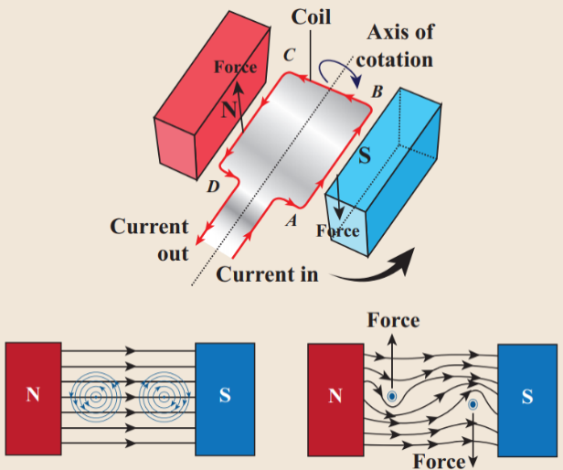
In Figure. 5.12, a simple coil is placed inside two poles of a magnet. Now look at the current carrying conductor segment AB. The direction of the current is towards B, whereas in the conductor segment CD the direction is opposite. As the current is flowing in opposite directions in the segments AB and CD, the direction of the motion of the segments would be in opposite directions according to Fleming’s left hand rule. When two ends of the coil experience force in opposite direction, they rotate.
Figure 5.13 Principle of electric motor image was given below
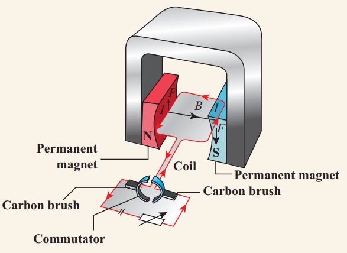
If the current flow is along the line ABCD, then the coil will rotate in clockwise direction first and then in anticlockwise direction. If we want to make the coil rotate in any one direction, say clockwise, then the direction of the current should be along ABCD in the first half of the rotation and along DCBA in the second half of the rotation. To change the direction of the current, a small device called split ring commutator is used.
When the gap in the split ring commutator is aligned with terminals X and Y, there is no flow of current in the coil. But, as the coil is moving, it continues to move forward bringing one of the split ring commutator in contact with the carbon brushes X and Y. The reversing of the current is repeated at each half rotation, giving rise to a continuous rotation of the coil.
The speed of rotation of coil can be increased by
1. Increasing the strength of current in the coil.
2. Increasing the number of turns in the coil.
3. Increasing the area of the coil and
4. Increasing the strength of the magnetic field.
When it was shown by Oersted that magnetic field is produced around a conductor carrying current, the reverse effect was also attempted. In 1831, Michael Faraday explained the possibility of producing an e.m.f. across the conductor when the magnetic flux linked with the conductor is changed. In order to demonstrate this, Faraday conducted few experiments.
In this experiment, two coils were wound on a soft iron ring Bracket OPEN separated from each other bracket closed. The coil on the left is connected to a battery and a switch K. A galvanometer is attached to the coil on the right. When the switch is put ‘on’, at that instant, there is a deflection in the galvanometer. Likewise, when the switch is put ‘off’, again there is a deflection – but in the opposite direction. This proves the generation of current.
Figure 5.14 Electromagnetic induction in a current carrying coil image was given below
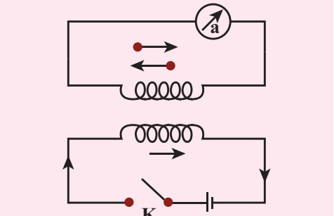
In this experiment, current Bracket OPEN or voltage bracket closed is generated by the movement of the magnet in and out of the coil. The greater the number of turns, the higher is the voltage generated.
Figure 5.15 Electromagnetic induction by moving the magnet image was given below
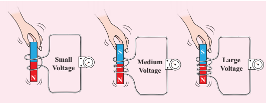
Figure 5.16 Electromagnetic induction by moving the coil image was given below
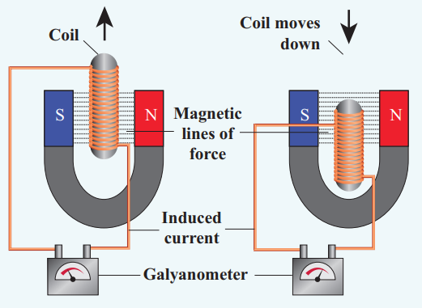
All these observations made Faraday to conclude that whenever there is a change in the magnetic flux linked with a closed circuit an emf is produced and the amount of emf induced varies directly as the rate at which the flux changes. This emf is known as induced emf and the phenomenon of producing an induced emf due to change in the magnetic flux linked with a closed circuit is known as electromagnetic induction.
Note: The direction of the induced current was given by Lenz’s law, which states that the induced current in the coil flows in such a direction as to oppose the change that causes it. The direction of induced current can also be given by another rule called Fleming’s Right Hand Rule.
Box item open
You are given a long iron nail, insulation coated copper wire and a battery. Can you make your own electromagnet question mark box item ends
Box item open
Michael Faraday Bracket OPEN22nd Sep,1791–25th Aug, 1867bracket closed was a British Scientist who contributed to the study of electromagnetism and electrochemistry. His main discoveries include the principles underlying electro magnetic induction, diamagnetism and electrolysis. box item ends
Stretch the thumb, fore finger and middle finger of your right hand mutually perpendicular to each other. If the fore finger indicates the direction of magnetic field and the thumb indicates the direction of motion of the conductor, then the middle finger will indicate the direction of induced current. Fleming’s Right hand rule is also called 'generator rule'.
Figure 5.17 Fleming’s right hand rule image was given below
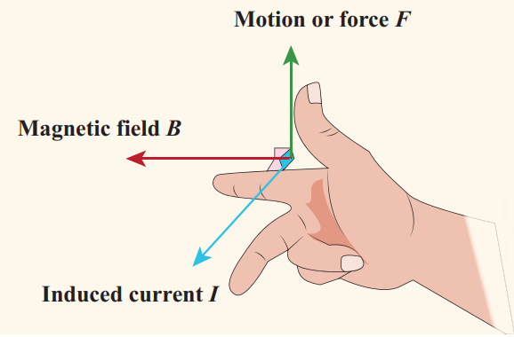
An alternating current Bracket OPEN AC bracket closed generator, as shown in Figure 5.18, consists of a rotating rectangular coil ABCD called armature placed between the two poles of a permanent magnet. The two ends of this coil are connected to two slip rings S1 and S2 . The inner sides of these rings are insulated. Two conducting stationary brushes B1 and B2 are kept separately on the rings S1 and S2 respectively. The two rings S1 and S2 are internally attached to an axle. The axle may be mechanically rotated from outside to rotate the coil inside the magnetic field. Outer ends of the two brushes are connected to the external circuit.
Figure 5.18 AC generator image was given below
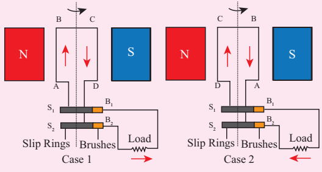
When the coil is rotated, the magnetic flux linked with the coil changes. This change in magnetic flux will lead to generation of induced current. The direction of the induced current, as given by Fleming’s Right Hand Rule, is along ABCD in the coil and in the outer circuit it flows from B2 to B1 . During the second half of rotation, the direction of current is along DCBA in the coil and in the outer circuit it flows from B1 to B2. As the rotation of the coil continues, the induced current in the external circuit is changing its direction for every half a rotation of the coil.
To get a direct current Bracket OPEN DC bracket closed, a split ring type commutator must be used. With this arrangement, one brush is at all times in contact with the arm moving up in the field while the other is in contact with the arm moving down. Thus, a unidirectional current is produced. The generator is thus called a DC generator Bracket OPEN Figure 5.19 bracket closed.
Figure 5.19 Comparison of AC and DC generators image was given below
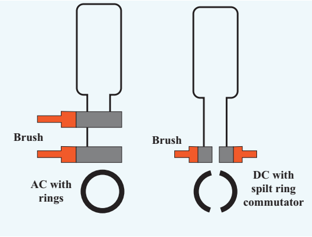
Transformer is a device used for converting low voltage into high voltage and high voltage into low voltage. It works on the principle of electromagnetic induction. It consists of primary and secondary coil insulated from each other. The alternating current flowing through the primary coil induces magnetic field in the iron ring. The magnetic field of the iron ring induces a varying emf in the secondary coil.
Figure 5.20 Step up and step down transformers image was given below
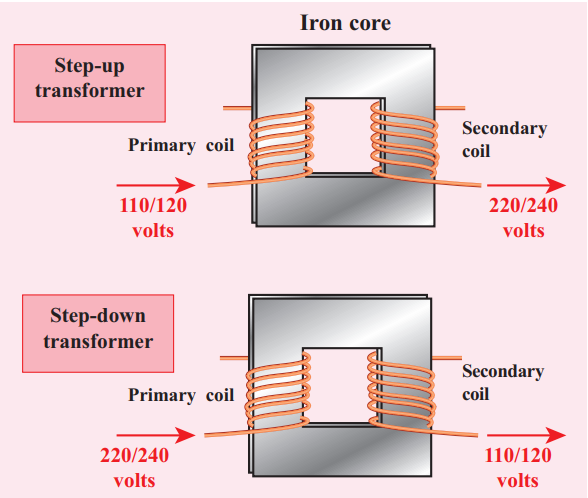
Depending upon the number of turns in the primary and secondary coils, we can step-up or step-down the voltage in the secondary coil as shown in Figure 5.20.
Step up transformer: The transformer used to change a low alternativing voltage to a high alternating voltage is called a step up transformer. that is Vs is greater than Vp. In a step up transformer, the number of turns in the secondary coil is more than the number of turns in the primary coil Bracket OPEN Ns is greater than Np bracket closed.
Step down transformer: The transformer used to change a high alternating voltage to a low alternating voltage is called a step down transformer Bracket OPEN Vs is less than Vp bracket closed. In a step down transformer, the number of turns in the secondary coils are less than the number of turns in the primary coil Bracket OPEN Ns is less than Np bracket closed.
The formulae pertaining to the transformers are given in the following equations.
Number of primary turns Np by Number of secondary turns Ns = primary voltage Vp by secondary voltage Vs
Number of secondary turns Ns by Number of primary turns Np = primary current Ip by secondary current I s
A transformer cannot be used with the direct current Bracket OPEN DC bracket closed source because, current in the primary coil is constant Bracket OPEN that is, DC bracket closed. Then there will be no change in the number of magnetic field lines linked with the secondary coil and hence no emf will be induced in the secondary coil.
Box item open
The primary coil of a transformer has 800 turns and the secondary coil has 8 turns. It is connected to a 220 V ac supply. What will be the output voltage question mark
Solution: In a transformer, E subscript of s by E subscript of p = N subscript of s by N subscript of p
E subscript of s = N subscript of s by N subscript of p into E subscript of p = 8 by 800 into 220 = 220 by 100 = 2.2 volt box item ends
Electromagnetism has created a great revolution in the field of engineering applications. In addition, this has caused a great impact on various fields such as medicine, industries, space etc.
Inside the speaker, an electromagnet is placed in front of a permanent magnet. The permanent magnet is fixed firmly in position whereas the electromagnet is mobile. As pulses of electricity pass through the coil of the electromagnet, the direction of its magnetic field is rapidly changed. This means that it is in turn attracted to and repelled from the permanent magnet vibrating back and forth. The electromagnet is attached to a cone made of a flexible material such as paper or plastic which amplifies these vibrations, pumping sound waves into the surrounding air towards our ears.
Magnetic levitation Bracket OPEN Maglev bracket closed is a method by which an object is suspended with no support other than magnetic fields. In maglev trains two sets of magnets are used, one set to repel and push the train up off the track, then another set to move the floating train ahead at great speed without friction. In this technology, there is no moving part. The train travels along a guideway of magnets which controls the train’s stability and speed using the basic principles of magnets.
Figure 5.21 Magnetic Levitation Trains image was given below
Nowadays electromagnetic fields play a key role in advanced medical equipments such as hyperthermia treatments for cancer, implants and magnetic resonance imaging Bracket OPEN MRI bracket closed. Sophisticated equipments working based on electromagnetism can scan even minute details of the human body
Figure 5.22 MRI Scanning machine image was given below
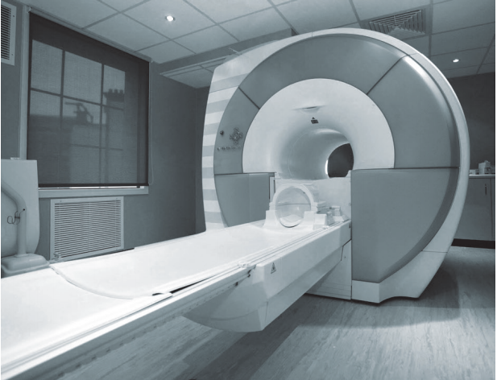
Many of the medical equipments such as scanners, x-ray equipments and other equipments also use the principle of electromagnetism for their functioning
When current passes through a wire a magnetic field is set up around the wire. This is called magnetic effect of current.
The space surrounding a bar magnet in which its influence in the form of magnetic force can be detected, is called magnetic field.
The path along which a free magnetic north pole will move in a magnetic field is called magnetic field lines.
The magnetic field set up by a current carrying conductor is always at right angles to the direction of flow of current.
Two parallel wires carrying current in the same directions attract each other.
Two parallel wires carrying current in the opposite directions repel each other.
Direction of the force in a current carrying conductor is determined by Fleming’s Left Hand Rule.
Electric motor is a device which converts electrical energy into mechanical energy.
The phenomenon of producing induced current in a closed circuit due to the change in magnetic field in the circuit is known as electromagnetic induction.
Direction of induced current in a conductor is determined by Fleming’s Right Hand Rule.
Electric generator is a device used to convert mechanical energy into electrical energy.
Electric generator works on the principle of electromagnetic induction.
Transformer converts low alternating current to high alternating current and vice versa.
Magnetic field The region surrounding a magnet in which the force of the magnet can be detected.
Magnetic line of force The path followed by a magnetic needle in a magnetic field.
Dynamo Device which converts mechanical energy into electrical energy.
Motor Device which converts electrical energy into mechanical energy.
Electromagnetic induction
The phenomenon of producing an induced emf due to change in the magnetic lines of forces associated with a conductor.
Transformer
Device which converts low alternating current to high alternating current and vice versa.
MRI Devise used to obtain images of the internal parts of our body.